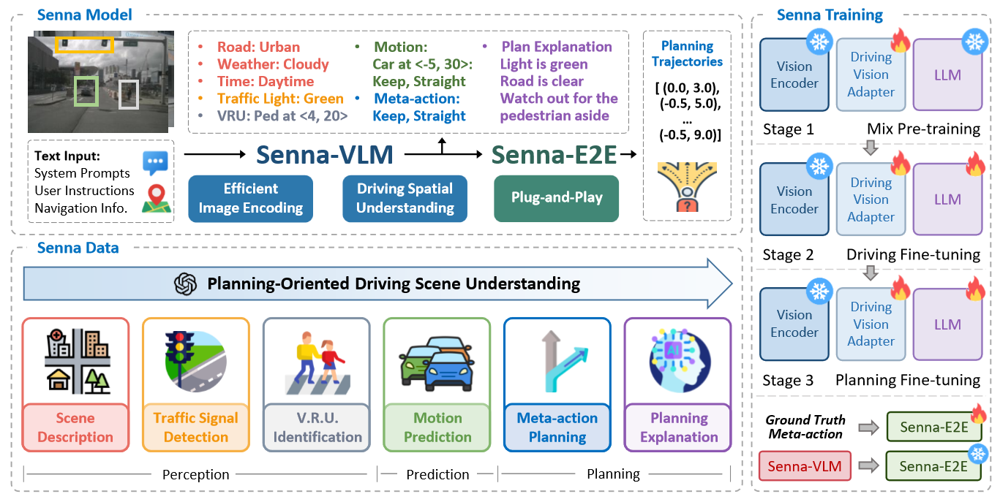
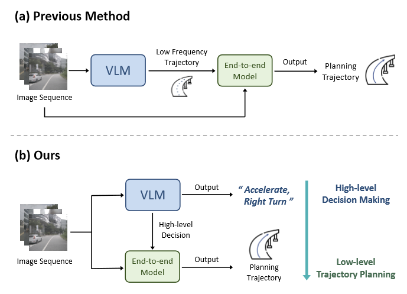
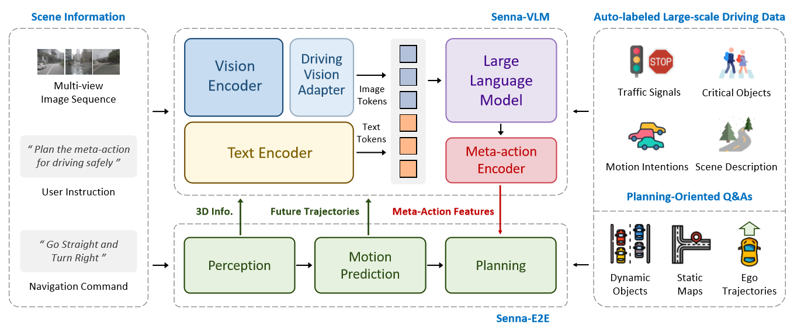
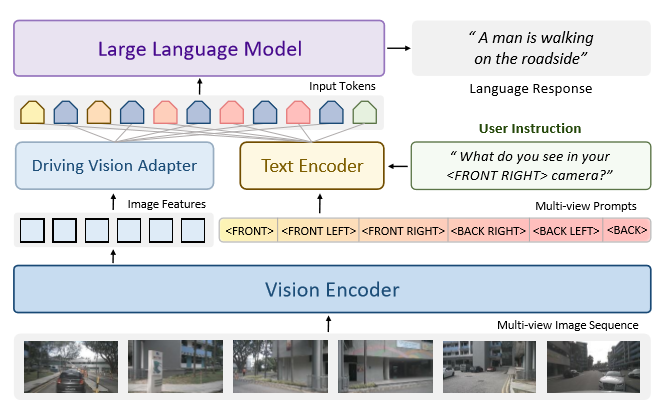
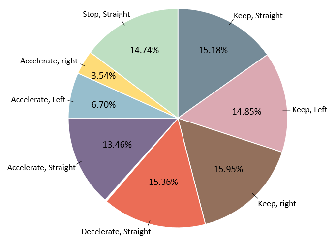
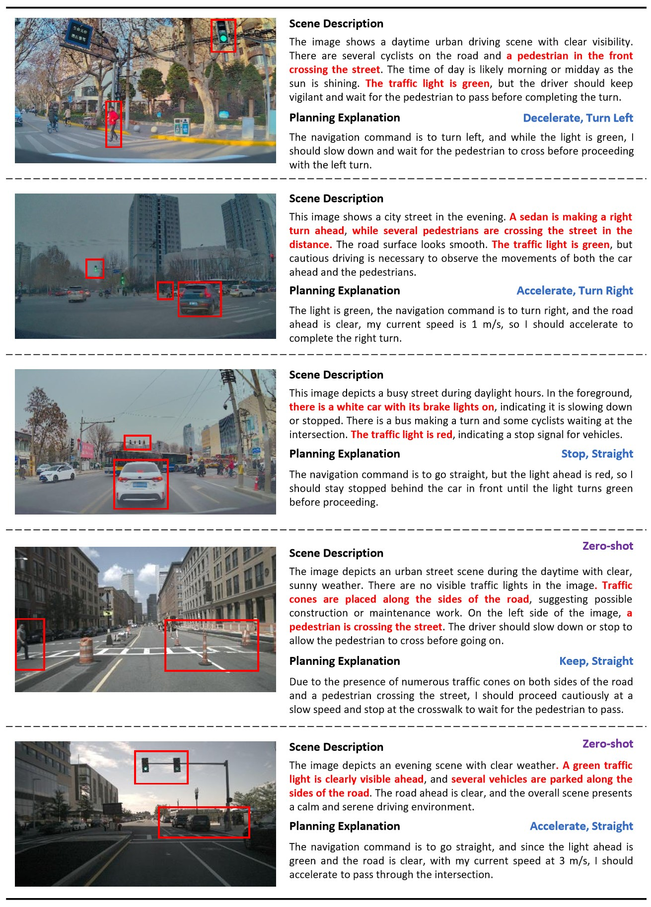
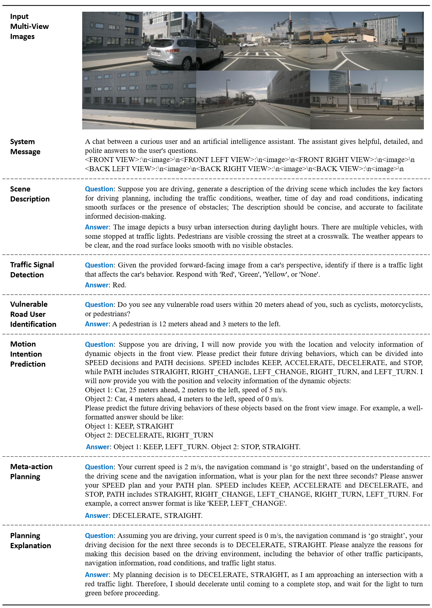

Bo Jiang、Shaoyu Chen、Bencheng Liao、Xingyu Zhang、Wei Yin、Qian Zhang、Chang Huang、Wenyu Liu（Senior Member, IEEE）、Xinggang Wang（Senior Member, IEEE）
Huazhong University of Science and Technology（B. Jiang、S. Chen、B. Liao、W. Liu、X. Wang）、Horizon Robotics（X. Zhang、W. Yin、Q. Zhang、C. Huang）
arXiv:2410.22313v1 [cs.CV]、2024年10月29日（Journal of LaTeX Class Files, Vol. 14, No. 8, October 2024 の書式）
翻訳について：原文 PDF は
54_Senna_2410.22313.pdf（全 13 ページ）。本文、図の説明、図中ラベル、表、脚注、付録を訳出し、論文タイトルと参考文献は原文のまま掲載。図は原図を掲載し、英語ラベルの日本語訳を併記した。数式・数値・引用番号・コードの識別子は原文を維持。原文の記述に関する補足は「訳注」と明示し、本文と区別している。

図1：Senna は、大規模視覚言語モデル（Senna-VLM）とエンドツーエンド運転モデル（Senna-E2E）からなる構造化された自動運転システムである。Senna-VLM は自然言語で高レベルの計画メタアクションを生成し、Senna-E2E は低レベルの計画軌道を予測する。我々は、大規模に自動ラベル付け可能な一連の計画指向 QA を設計し、3 段階の学習戦略と組み合わせることで、深い運転シーン理解と正確な計画を可能にする。
図中ラベル：Senna Model＝Senna モデル、Road: Urban＝道路：市街地、Weather: Cloudy＝天候：曇り、Time: Daytime＝時間帯：日中、Traffic Light: Green＝信号：青、VRU: Ped at <4, 20>＝交通弱者：<4, 20> に歩行者、Motion: Car at <-5, 30>: Keep, Straight＝動き：<-5, 30> の車は速度維持・直進、Meta-action: Keep, Straight＝メタアクション：速度維持・直進、Plan Explanation: Light is green / Road is clear / Watch out for the pedestrian aside＝計画の説明：信号は青／道路は空いている／脇の歩行者に注意、Planning Trajectories＝計画軌道、Text Input: System Prompts / User Instructions / Navigation Info.＝テキスト入力：システムプロンプト／ユーザ指示／ナビゲーション情報、Efficient Image Encoding＝効率的な画像エンコーディング、Driving Spatial Understanding＝運転の空間理解、Plug-and-Play＝プラグアンドプレイ、Senna Training＝Senna の学習、Vision Encoder＝視覚エンコーダ、Driving Vision Adapter＝運転用視覚アダプタ、Stage 1 Mix Pre-training＝段階 1 混合事前学習、Stage 2 Driving Fine-tuning＝段階 2 運転ファインチューニング、Stage 3 Planning Fine-tuning＝段階 3 計画ファインチューニング、Ground Truth Meta-action＝正解メタアクション、Senna Data＝Senna のデータ、Planning-Oriented Driving Scene Understanding＝計画指向の運転シーン理解、Scene Description＝シーン記述、Traffic Signal Detection＝信号検出、V.R.U. Identification＝交通弱者（VRU）の識別、Motion Prediction＝動き予測、Meta-action Planning＝メタアクション計画、Planning Explanation＝計画の説明、Perception＝知覚、Prediction＝予測、Planning＝計画（雪の結晶＝パラメータ凍結、炎＝学習対象）
エンドツーエンド自動運転は大規模データによって強力な計画能力を示しているが、常識が限られているために、複雑でまれなシナリオでは依然として苦戦している。対照的に、大規模視覚言語モデル（LVLM）はシーン理解と推論に優れている。今後の道筋は両アプローチの強みを融合することにある。LVLM を用いて軌道や制御信号を予測する従来手法は、LVLM が精密な数値予測に適していないため、最適ではない結果しか得られない。本論文では、LVLM（Senna-VLM）とエンドツーエンドモデル（Senna-E2E）を組み合わせた自動運転システム Senna を提示する。Senna は高レベルの計画を低レベルの軌道予測から分離する。Senna-VLM は自然言語で計画決定を生成し、Senna-E2E は精密な軌道を予測する。Senna-VLM は、効率的なシーン理解のために多画像エンコーディング手法と多視点プロンプトを利用する。さらに、計画指向の QA と 3 段階の学習戦略を導入し、常識を保持しつつ Senna-VLM の計画性能を向上させる。2 つのデータセットでの大規模な実験により、Senna が最先端の計画性能を達成することを示す。特に、大規模データセット DriveX で事前学習し nuScenes でファインチューニングすることで、Senna は事前学習なしのモデルと比べて平均計画誤差を 27.12%、衝突率を 33.33% 大幅に削減する。我々は、Senna のシナリオ横断的な汎化性と転移性が完全自動運転の実現に不可欠であると考える。コードとモデルは https://github.com/hustvl/Senna で公開予定である。
索引語：自動運転、エンドツーエンド、大規模視覚言語モデル、計画、マルチモダリティ
B. Jiang、S. Chen、B. Liao、W. Liu、X. Wang は Huazhong University of Science and Technology（中国・武漢 430074）に所属。X. Zhang、W. Yin、Q. Zhang、C. Huang は Horizon Robotics に所属。責任著者：Xinggang Wang（xgwang@hust.edu.cn）。
自動運転は近年急速な発展を遂げている［1］–［3］。運転における知覚［4］–［6］、動き予測［7］–［9］、計画［10］–［12］の分野で大きな進歩があった。これらの発展は、より正確で安全な運転判断を実現するための確かな基盤となっている。その中でも、エンドツーエンド自動運転は重要なブレークスルーとして際立っている。大規模データに支えられ、エンドツーエンドの手法は目覚ましい計画能力を示してきた。また、大規模視覚言語モデル（LVLM）［13］–［17］は、ますます強力な画像理解・推論能力を示している。その常識と論理を活用することで、LVLM は運転環境を分析し、複雑なシナリオにおいて安全な判断を下すことができる。膨大な運転データを活用して自動運転における LVLM の性能を向上させ、LVLM とエンドツーエンドモデルを橋渡しすることは、安全で頑健かつ汎化可能な自動運転を実現するうえで極めて重要である。

図2：従来手法は意思決定のステップなしに軌道を計画するため、モデルの学習が難しくなる。また LVLM は精密な軌道予測を苦手とする。Senna は構造化された計画アプローチを採用する。Senna-VLM は事前学習で得た常識と運転知識を活用して自然言語で高レベルの決定を行い、Senna-E2E がそれを用いて最終的な軌道を生成する。
図中ラベル：(a) Previous Method＝(a) 従来手法、(b) Ours＝(b) 提案手法、Image Sequence＝画像系列、Low Frequency Trajectory＝低頻度の軌道、End-to-end Model＝エンドツーエンドモデル、Output＝出力、Planning Trajectory＝計画軌道、"Accelerate, Right Turn"＝「加速、右折」、High-level Decision＝高レベルの決定、High-level Decision Making＝高レベルの意思決定、Low-level Trajectory Planning＝低レベルの軌道計画
エンドツーエンド自動運転における一般的な方法は、意思決定のステップを経ずに将来の軌道や制御信号を直接予測することである。しかしこのアプローチは、解釈性に欠けるうえ、モデルの学習をより困難にする可能性がある。対照的に、人間の脳が詳細な判断を下す際には、階層的な高レベルの意思決定と低レベルの実行からなるシステムが重要な役割を果たしている［18］–［20］。さらに、エンドツーエンドモデルはしばしば常識を欠き、単純なシナリオで誤りを犯しうる。たとえば、カラーコーンを積んだトラックを道路封鎖と誤認し、不要なブレーキを引き起こすことがある。これらの限界がエンドツーエンドモデルの計画性能を妨げている。
本論文では、主に次の 3 つの重要な問いを探究し、その答えを試みる。
LVLM をエンドツーエンドモデルとどう統合するか？自動運転の計画における LVLM の応用は、現在 2 つの主要なタイプに分類される。1 つは、LVLM を直接プランナとして用い、軌道点や制御信号を予測するものである［21］–［24］。しかし LVLM は本質的に精密な数学的計算に限界があり［25］、［26］、正確な数値の予測にはあまり適していない。もう 1 つは、LVLM をエンドツーエンドモデルと組み合わせるアプローチである。先駆的な先行研究［27］では、LVLM を用いて低頻度の軌道点を予測し、それをエンドツーエンドモデルが精緻化して高頻度の軌道を生成する。これにより LVLM が予測する点の数が減り、問題は部分的に緩和される。しかし LVLM が依然として軌道点を予測する必要があるため、問題は完全には解決されていない。
本研究では、構造化された自動運転システム Senna を提案する。Senna は大規模視覚言語モデル（Senna-VLM）とエンドツーエンドモデル（Senna-E2E）を統合したもので、その名はブラジルの著名なレーシングドライバー Ayrton Senna に由来する。Senna の構造化された計画の考え方の核心は、高レベルの計画決定と低レベルの軌道予測を分離することにある。具体的には、Senna-VLM が自然言語で高レベルの計画決定を予測し、それを高次元特徴にエンコードして Senna-E2E に入力する。Senna-E2E はこの高レベルの決定を条件として、最終的な計画軌道を生成する。
言語ベースの計画決定を予測することで、LVLM は事前学習した言語タスクから得た知識と常識を十分に活用でき、妥当な決定を生成しつつ精密な数値予測に伴う問題を回避できる。一方、エンドツーエンドモデルは正確な軌道予測に優れている。高レベルの意思決定と低レベルの軌道計画を分離することで、エンドツーエンドモデルの学習の複雑さを減らし、軌道計画の精度を向上させる。
先行研究［23］、［27］と同様に、Senna-VLM は計画決定として定型化されたメタアクションを用いて予測空間を狭める。これにより LVLM の学習の難しさが軽減され、エンドツーエンドモデルとの統合も容易になる。単純なメタアクションエンコーダを用いて計画決定を高次元特徴に変換し、Senna-E2E に入力する。学習時には Senna-E2E は正解の計画決定を入力として用い、推論時には Senna-VLM が予測した決定に依拠する。
運転タスクに特化した LVLM をどう設計するか？現在よく使われている LVLM は、多画像入力に特化して最適化されていない［13］、［14］、［28］。運転タスク向けの従来の LVLM は、前方視点の入力のみをサポートして空間認識を制限し安全上のリスクを高めるか［21］、［29］、あるいは多画像入力に対応していても詳細な設計や有効性の検証を欠いている［23］、［27］。
Senna-VLM は運転タスクに特化して設計されている。サラウンドビューのデータをエンコードするために多画像入力をサポートしており、これは運転シナリオの理解と安全性の確保に不可欠である。当初、我々は LLaVA-1.5［30］を用いてサラウンドビュー入力を統合しようとしたが、画像トークンが多すぎるために結果は不満足なものであった。これに対処するため、画像トークンをエンコード・圧縮する運転用視覚アダプタを提案し、サラウンドビューのシナリオ向けに特別に設計したプロンプトを導入する。これらの設計により、モデルはさまざまな視点からの画像特徴を区別し、空間的理解を獲得できる。
運転用 LVLM をどう効果的に学習させるか？運転タスク向けの LVLM を開発した後、最後のステップは効果的な学習を確実にすることであり、これには適切なデータと戦略の両方が必要である。データの面では、先行研究がさまざまなデータ戦略を提案しているが［31］–［33］、その多くは計画タスク向けに特化して設計されたものではなく、検出やグラウンディングなど他のタスク向けである。本論文では、運転計画におけるさまざまな種類の QA の重要性を初めて検証する。具体的には、運転シナリオにおける計画関連の手がかりに対する VLM の理解を高め、最終的により正確な計画を可能にするよう設計された一連の計画指向 QA を導入する。これらの QA には、運転シーンの記述、交通参加者の動きの意図予測、信号検出、メタアクション計画などが含まれる。人手アノテーションに依存していた先行研究［27］、［29］とは異なり、我々のデータ戦略は完全に自動のパイプラインによって大規模に生成できる。
学習戦略については、既存手法の多くが汎用の事前学習の後に運転向けファインチューニングを行う方式を採用している［23］、［27］。しかし我々の実験結果は、これが最適な選択ではない可能性を示している。代わりに我々は、混合事前学習、運転ファインチューニング、計画ファインチューニングからなる Senna-VLM 向けの 3 段階学習戦略を提案する。実験結果は、提案する学習戦略が最良の計画性能をもたらすことを示している。
Senna にはいくつかの利点がある。その構造化された計画戦略は、LVLM とエンドツーエンドモデルの強みを組み合わせて自動運転の安全性、頑健性、汎化性を向上させ、サラウンドビューと多画像入力のサポートは運転シーン理解の能力を効果的に高める。提案する計画指向 QA と 3 段階学習戦略により、Senna-VLM は常識を保持してモデル崩壊を防ぎつつ、より正確な計画決定を行えるようになる。
本研究の主な貢献は次のようにまとめられる。
エンドツーエンド自動運転。従来の自動運転システムは、一般にルールベースのプランナ［35］–［37］を備えた段階的なモジュール設計を採用しており、モデルの汎化が限られ、計画性能に上限があるといった課題に直面する。対照的に、エンドツーエンド自動運転はニューラルネットワークを用いて知覚入力を計画出力に直接写像する。初期の研究［11］、［38］、［39］はこれをブラックボックス的なアプローチとして扱い、解釈性を欠くにもかかわらず、エンドツーエンド学習におけるニューラルネットワークの可能性を示した。近年の自動運転の急速な進歩に伴い、利用可能な運転データの爆発的増加がエンドツーエンドのアプローチを大きく後押ししている［2］、［3］、［40］–［43］。UniAD［2］は Transformer［44］を用いたマルチタスクフレームワークを導入し、物体追跡、軌道予測、地図予測、占有予測、計画を行う。これらの補助タスクからの追加の教師信号が、モデルの計画性能を大きく向上させる。VAD［3］はベクトル化されたシーン表現を導入し、精度と速度のより良いバランスを実現する。VADv2［43］はさらに確率的計画を提案し、決定論的な計画をマルチモーダルな軌道スコアリングに置き換えて計画の不確実性をより良く捉える。我々は VADv2 を拡張して高レベルの決定情報を取り込めるようにし、これを Senna のエンドツーエンドモデルとして用いる。
大規模視覚言語モデル。強力な理解能力と対話能力を示す大規模言語モデル（LLM）の登場［45］–［48］により、この能力を単一のテキストモダリティからマルチモーダルなシステムへ拡張するのは自然な流れであり、その中で視覚モダリティは最も重要なものの 1 つである［13］–［16］、［28］、［49］、［50］。CLIP［51］、［52］は画像とテキストのペアを用いた対照学習の先駆けとなり、モデルが自己教師ありの方法で大規模な事前学習を行えるようにした。BLIP［53］、［54］は、クロスモーダルな対照学習と生成タスクを通じて視覚モデルと言語モデルを橋渡しする。こうしたクロスモーダル学習戦略［51］、［55］–［57］を基盤として、LVLM は一連の進歩を遂げてきた。GPT-4V［17］は、複雑なシーンの理解とマルチタスク推論において顕著な性能を示す。LLaVA［13］、［30］は視覚的インストラクションチューニングを導入し、GPT-4 が生成した言語・画像の指示追従データをクロスモーダル学習に活用する。QwenVL［14］は視覚コネクタ、学習戦略、データを改良し、多言語理解と 3D 知覚に優れる。VILA［28］はクロスモーダル事前学習と教師ありファインチューニングの戦略を最適化することでマルチモーダル性能を向上させる。Qwen2-VL［58］は、より高度な Qwen2［48］を言語モデルとして採用し、マルチモーダル回転位置埋め込みと動的な数の視覚トークンを導入して、任意解像度の画像・動画入力をサポートする。
大規模視覚言語モデルと自動運転。LVLM の常識的知識、推論能力、解釈性は、エンドツーエンドモデルの欠点を効果的に補うことができる。Drive-with-LLMs［22］は、正解の運転知覚データと Transformer ネットワークを用いて知覚情報を潜在空間にエンコードし、それを LLM に入力して将来の計画軌道を予測する。DriveGPT4［21］は前方カメラの動画入力を受け取り、LVLM を用いて計画用の制御信号を予測し、決定の説明を提供する。LanguageMPC［59］は過去の正解知覚情報と HD マップを自然言語形式に変換し、思考の連鎖（chain of thought）推論を用いて運転シーンを分析し計画行動を生成する。DriveMLM［23］は、閉ループシミュレーション環境［60］において LVLM ベースの計画モデルの有効性を検証した。ELM［29］は、インターネット規模のクロスドメイン動画データを用いた LVLM の大規模事前学習を導入し、多様なソースとタスク固有の学習データを取り込むことで運転タスクにおける LVLM の性能が大きく向上することを示した。他のいくつかの研究も、運転タスクに特化したデータ収集戦略とデータセットを提案し、自動運転における LVLM の発展をさらに推し進めている［31］–［33］、［61］–［63］。DriveVLM［27］は LVLM をエンドツーエンドモデルと組み合わせた最初の研究であり、LVLM が低頻度の軌道を予測し、エンドツーエンドモデルがそれを精緻化して最終的な計画軌道を生成する。DriveVLM は nuScenes データセットと自ら提案したデータセットの両方で強力な計画性能を示している。しかし LVLM は精密な数学的計算に適していないため、LVLM で軌道点を予測すると最適でない性能になる可能性がある。我々は構造化された計画戦略を提案する。Senna-VLM は自然言語で高レベルの決定情報を予測し、LVLM が精密な数値を予測する必要をなくす。このアプローチは自然言語予測を伴う LVLM の事前学習タスクと整合しており、事前学習した知識を効果的に活用して正確な計画決定を行う。Senna-VLM が予測した決定に基づき、Senna-E2E が最終的な計画軌道を生成する。

図3：Senna の全体アーキテクチャ。Senna は Senna-VLM と Senna-E2E の 2 つのモジュールからなる。Senna-VLM は多視点画像を効率的にエンコードし、周囲を見渡す視点からの空間的理解を実現する。入力シーン情報が与えられると、Senna-VLM は高レベルの計画決定を予測し、それはメタアクション特徴にエンコードされる。続いて Senna-E2E が、シーン情報とメタアクション特徴の両方に基づいて最終的な計画軌道を予測する。Senna は自動ラベル付けされた大規模運転データを用いて学習する。
図中ラベル：Scene Information＝シーン情報、Multi-view Image Sequence＝多視点画像系列、"Plan the meta-action for driving safely"＝「安全に運転するためのメタアクションを計画せよ」、User Instruction＝ユーザ指示、"Go Straight and Turn Right"＝「直進して右折」、Navigation Command＝ナビゲーションコマンド、Vision Encoder＝視覚エンコーダ、Driving Vision Adapter＝運転用視覚アダプタ、Text Encoder＝テキストエンコーダ、Image Tokens＝画像トークン、Text Tokens＝テキストトークン、Large Language Model＝大規模言語モデル、Meta-action Encoder＝メタアクションエンコーダ、3D Info.＝3D 情報、Future Trajectories＝将来軌道、Meta-Action Features＝メタアクション特徴、Perception＝知覚、Motion Prediction＝動き予測、Planning＝計画、Auto-labeled Large-scale Driving Data＝自動ラベル付けされた大規模運転データ、Traffic Signals＝交通信号、Critical Objects＝重要物体、Motion Intentions＝動きの意図、Scene Description＝シーン記述、Planning-Oriented Q&As＝計画指向 Q&A、Dynamic Objects＝動的物体、Static Maps＝静的地図、Ego Trajectories＝自車軌道
本節では Senna を詳しく紹介する。図3 に Senna の全体アーキテクチャを示す。入力シーン情報には、多視点画像系列、ユーザ指示、ナビゲーションコマンドが含まれる。ユーザ指示はプロンプトとして Senna-VLM に入力され、それ以外は Senna-VLM と Senna-E2E の両方に送られる。Senna-VLM は画像情報とテキスト情報をそれぞれ画像トークンとテキストトークンにエンコードし、それらが LLM によって処理される。LLM は高レベルの決定を生成し、それはメタアクションエンコーダによって高次元特徴にエンコードされる。Senna-E2E は、シーン情報と Senna-VLM が生成したメタアクション特徴に基づいて最終的な計画軌道を予測する。我々は Senna-VLM の学習のために一連の計画指向 QA を設計しており、これらは人手アノテーションを必要とせず、自動ラベル付けパイプラインによって完全に大規模に生成できる。
3.1 節では、運転シーン理解のための計画指向 QA を詳述する。3.2 節と 3.3 節では、それぞれ Senna-VLM と Senna-E2E の設計に焦点を当てる。3.4 節では、提案する 3 段階学習戦略を紹介する。
運転シーンにおける主要な要因を理解することは、安全かつ正確な計画にとって極めて重要である。我々は Senna-VLM の運転シーン理解を高めるため、一連の計画指向 QA を設計する。各種 QA の詳細を図7 に示す。これらの QA の生成に用いる 3D 物体検出ボックスや物体追跡軌道などの生データは、自動アノテーションシステムによって得ることができる。また、記述 QA は GPT-4o［17］のような LVLM で生成できる。以下、各種 QA について詳述する。
シーン記述。事前学習済み LVLM を用いて、サラウンドビュー画像に基づく運転シーンの記述を生成する。計画に無関係な冗長情報の生成を避けるため、必要な情報をプロンプト内で指定する。それには、交通状況、環境（例えば市街地、郊外など）、道路の種類（例えば舗装道路、高速道路）、天候、時間帯、路面状況（例えば路面が平滑か、障害物があるか）が含まれる。このようにプロンプトを構造化することで、簡潔かつ情報量の多いシーン記述を得ることができる。

図4：効率的な運転シーン理解のために提案する多視点プロンプトと画像エンコーディング手法。
図中ラベル：Large Language Model＝大規模言語モデル、Input Tokens＝入力トークン、"A man is walking on the roadside"＝「男性が道路脇を歩いている」、Language Response＝言語応答、User Instruction＝ユーザ指示、"What do you see in your <FRONT RIGHT> camera?"＝「<FRONT RIGHT>（右前方）カメラに何が見えるか？」、Driving Vision Adapter＝運転用視覚アダプタ、Text Encoder＝テキストエンコーダ、Image Features＝画像特徴、Multi-view Prompts＝多視点プロンプト、<FRONT>／<FRONT LEFT>／<FRONT RIGHT>／<BACK RIGHT>／<BACK LEFT>／<BACK>＝前方／左前方／右前方／右後方／左後方／後方、Vision Encoder＝視覚エンコーダ、Multi-view Image Sequence＝多視点画像系列
信号検出。交通信号にはさまざまな種類があるが、ここでは最も重要な信号機に主に焦点を当てる。信号機の状態は、赤、青、黄、なしの 4 種類に分類できる。ここで「なし」は、自車の前方に信号機が検出されないことを示す。
交通弱者の識別。環境内の交通弱者（VRU）を識別することで、これらの重要物体に対する Senna の知覚を高め、計画の安全性を向上させる。具体的には、正解の 3D 検出結果を用いて VRU のカテゴリと位置を取得し、その情報をテキスト形式で記述する。位置情報は自車を中心とし、自車に対する各 VRU の横方向および縦方向の距離を含む。距離知覚を構築しつつ学習の複雑さを減らすため、Senna-VLM には距離の整数部分のみを予測させる。
動きの意図予測。他車両の将来の動きの意図を正確に予測することは、安全な計画の前提条件である。ここでもメタアクションによるアプローチを採用し、Senna が周囲車両の将来の挙動を予測できるようにする。これにより、シーンの動的特徴に対する Senna の理解が高まり、より情報に基づいた決定が可能になる。
メタアクション計画。LVLM を精密な軌道予測に用いることを避けるため、自車の将来軌道を高レベル計画のためのメタアクションに変換する。具体的には、メタアクションは横方向と縦方向の決定からなる。横方向のメタアクションには Left（左）、Straight（直進）、Right（右）があり、縦方向のメタアクションには Accelerate（加速）、Keep（維持）、Decelerate（減速）、Stop（停止）がある。横方向のメタアクションは予測対象の将来時間ステップ \(T\) における横方向の変位に基づいて決定され、縦方向のメタアクションは予測期間中の速度変化によって決定される。最終的なメタアクションは、横方向と縦方向の両方のメタアクションからなる。
計画の説明。また、車両の正解の将来の動きに基づき、LVLM を用いて計画の説明も生成する。すなわち、車両の実際の将来の動き（例えば加速して左折する）を LVLM に伝え、そのような決定の理由を分析させる。プロンプトでは、他の交通参加者の挙動、ナビゲーション情報、路面状況、信号の状態といった、計画に影響を与える以下の要因を考慮して決定を分析するようモデルを誘導する。
Senna-VLM は 4 つの構成要素からなる。視覚エンコーダ（Vision Encoder）は多視点画像系列 \(I \in \mathbb{R}^{N_{\mathrm{img}} \times H \times W \times 3}\) を入力として画像特徴を抽出し、それを運転用視覚アダプタ（Driving Vision Adapter）がさらにエンコード・圧縮して、画像トークン \(E_{\mathrm{img}} \in \mathbb{R}^{N_{\mathrm{img}} \times M_{\mathrm{img}} \times C}\) を得る。\(N_{\mathrm{img}}\)、\(M_{\mathrm{img}}\)、\(C\) はそれぞれ画像の枚数、画像 1 枚あたりの画像トークン数、LLM の特徴次元である。\(H\) と \(W\) はそれぞれ画像の高さと幅である。テキストエンコーダ（Text Encoder）はユーザ指示とナビゲーションコマンドをテキストトークン \(E_{\mathrm{txt}} \in \mathbb{R}^{M_{\mathrm{txt}} \times C}\) にエンコードする。ここで \(M_{\mathrm{txt}}\) はテキストトークン数である。画像トークンとテキストトークンの両方が LLM に入力され、LLM が高レベルの決定を予測する。実際には、LLM として Vicuna-v1.5-7b［64］を用いる。最後に、メタアクションエンコーダ（Meta-action Encoder）が決定をエンコードし、メタアクション特徴 \(e_{\mathrm{act}} \in \mathbb{R}^{D}\) を出力する。ここで \(D\) は Senna-E2E の特徴次元である。
視覚エンコーダとして CLIP［51］の ViT-L/14 を用い、各画像を \(H = W = 224\) にリサイズすると、576 個の画像トークンが得られる。多画像入力では画像トークン数が過大になり、VLM の学習と推論が遅くなるだけでなく、モデル崩壊やデコードの失敗も引き起こす。そこで、運転用視覚アダプタモジュールを導入する。このモジュールは、先行研究［13］、［54］と同様に画像特徴を LLM の特徴空間に写像する機能を果たすだけでなく、画像トークン数を減らすために画像特徴の追加のエンコードと圧縮も行う。具体的には、画像クエリの集合 \(Q_{img} \in \mathbb{R}^{N_{\mathrm{img}} \times M_{\mathrm{img}} \times C}\) を採用して画像特徴をエンコードし、画像トークンを出力する。
\[ E^{i}_{\mathrm{img}} = \texttt{MHSA}[Q^{i}_{\mathrm{img}}, \texttt{W} \cdot g(I^{i}), \texttt{W} \cdot g(I^{i})] \in \mathbb{R}^{M_{\mathrm{img}} \times C}, \tag{1} \]
ここで \(\texttt{MHSA}\) はマルチヘッド自己注意［44］、\(g\) は視覚エンコーダ、\(\texttt{W}\) は画像特徴を射影するための線形層と GELU［65］活性化層からなる多層パーセプトロンである。\(E^{i}_{\mathrm{img}}\) と \(Q^{i}_{\mathrm{img}}\) は、それぞれ \(i\) 番目の画像 \(I^{i}\) に対する画像トークンと画像クエリを表す。我々の実験は、画像特徴をさらにエンコード・圧縮してもモデル性能が低下しないことを示している。一方、画像トークン数が過大であるとモデル崩壊やデコードの失敗につながる。
Senna-VLM が異なる視点からの画像特徴を区別し空間的理解を構築できるよう、運転シナリオ向けにシンプルかつ効果的なサラウンドビュープロンプトを設計する。前方視点を例にとると、対応するプロンプトは <FRONT VIEW>:\n<image>\n である。ここで <image> は LLM 用の特殊トークンであり、生成時に画像トークンに置き換えられる。図4 に、提案する多視点プロンプトと画像エンコーディング手法の設計を示す。
最後に、LLM が出力する高レベルの決定をメタアクション特徴 \(e_{\mathrm{act}}\) に変換するメタアクションエンコーダ \(\varphi\) を提案する。定型化されたメタアクションの集合を用いるため、メタアクションエンコーダ \(\varphi\) は学習可能な埋め込みの集合 \(E_{\mathrm{act}} \in \mathbb{R}^{N_{\mathrm{act}} \times D}\) を用いてメタアクションからメタアクション特徴への 1 対 1 の写像を実現する。ここで \(N_{\mathrm{act}}\) はメタアクションの数である。式 2 にメタアクション特徴の生成過程を示す。
\[ e_{\mathrm{act}} = \varphi(\texttt{LLM}[\texttt{concat}(\{E^{i}_{\mathrm{view}}, E^{i}_{\mathrm{img}}\}^{N_{\mathrm{img}}}_{i=1}, E_{\mathrm{txt}})]), \tag{2} \]
ここで \(E^{i}_{\mathrm{view}}\) は \(i\) 番目の画像に対応するサラウンドビュープロンプトである。\(\texttt{LLM}\) は Senna の大規模言語モデルである。その後、メタアクション特徴は Senna-E2E に入力され、計画軌道の予測に用いられる。
| 手法 | Acc.（%）↑ | 経路（F1）↑ | 速度（F1）↑ | BLEU-4 ↑ | CIDEr ↑ | METEOR ↑ | |||||
|---|---|---|---|---|---|---|---|---|---|---|---|
| straight | left | right | keep | acc. | dec. | stop | |||||
| QwenVL［14］ | 7.66 | 78.95 | 4.87 | 1.14 | 3.28 | 2.89 | 15.14 | 1.21 | 8.97 | 4.01 | 31.04 |
| VILA［28］ | 6.95 | 31.70 | 0.00 | 2.52 | 65.37 | 10.79 | 0.00 | 0.00 | 14.65 | 9.67 | 36.43 |
| LLaVA-1.5［30］ | 21.34 | 87.18 | 0.00 | 0.00 | 64.78 | 0.00 | 0.00 | 0.00 | 14.05 | 5.71 | 36.94 |
| QwenVL†［14］ | 56.38 | 96.01 | 90.48 | 89.80 | 66.49 | 49.88 | 45.22 | 64.78 | 25.89 | 19.91 | 46.54 |
| VILA†［28］ | 63.03 | 95.74 | 90.74 | 88.30 | 73.65 | 43.14 | 49.81 | 77.65 | 23.50 | 17.23 | 44.17 |
| LLaVA-1.5†［30］ | 64.48 | 96.00 | 89.04 | 89.57 | 74.94 | 44.24 | 52.68 | 78.96 | 25.97 | 21.62 | 45.08 |
| Senna | 71.21 | 95.60 | 89.37 | 90.09 | 80.18 | 58.83 | 61.99 | 80.10 | 31.04 | 34.31 | 50.44 |
表1：DriveX 検証データセットにおける高レベル計画とシーン記述の評価結果。Senna は従来手法と比べて運転シナリオをより深く理解しており、より正確な計画決定につながっている。† は DriveX データセットでファインチューニングしたことを示す。"acc." は加速（accelerate）、"dec." は減速（decelerate）を表す。
| 手法 | L2（m）↓ | 衝突率（%）↓ | ||||||
|---|---|---|---|---|---|---|---|---|
| 1s | 2s | 3s | 平均 | 1s | 2s | 3s | 平均 | |
| IL［66］ | 0.44 | 1.15 | 2.47 | 1.35 | 0.08 | 0.27 | 1.95 | 0.77 |
| NMP［67］ | - | - | - | 2.31 | - | - | 1.92 | - |
| SA-NMP［67］ | - | - | - | 2.05 | - | - | 1.59 | - |
| FF［68］ | 0.55 | 1.20 | 2.54 | 1.43 | 0.06 | 0.17 | 1.07 | 0.43 |
| EO［69］ | 0.67 | 1.36 | 2.78 | 1.60 | 0.04 | 0.09 | 0.88 | 0.33 |
| ST-P3［12］ | 1.33 | 2.11 | 2.90 | 2.11 | 0.23 | 0.62 | 1.27 | 0.71 |
| UniAD［2］ | 0.48 | 0.96 | 1.65 | 1.03 | 0.05 | 0.17 | 0.71 | 0.31 |
| VAD-Base*［3］ | 0.17 | 0.34 | 0.60 | 0.37 | 0.07 | 0.10 | 0.24 | 0.14 |
| DriveVLM*［27］ | 0.15 | 0.29 | 0.48 | 0.31 | 0.05 | 0.08 | 0.17 | 0.10 |
| Senna* | 0.11 | 0.21 | 0.35 | 0.22 | 0.04 | 0.08 | 0.13 | 0.08 |
| VAD-Base［3］ | 0.41 | 0.70 | 1.05 | 0.72 | 0.07 | 0.17 | 0.41 | 0.22 |
| Senna | 0.37 | 0.54 | 0.86 | 0.59 | 0.09 | 0.12 | 0.33 | 0.18 |
| Senna† | 0.26 | 0.42 | 0.61 | 0.43 | 0.05 | 0.11 | 0.21 | 0.12 |
表2：nuScenes 検証データセットにおける軌道計画の結果。* は自車状態の特徴を入力として用いることを示す。nuScenes データセットでの実験では、公平な比較のため Senna を VAD［3］と組み合わせている。† は DriveX データセットで事前学習した重みで初期化したことを示す。
| 手法 | 計画情報 | L2（m）↓ | ||
|---|---|---|---|---|
| 1s | 2s | 3s | ||
| VADv2［43］ | G.T. Meta-action | 0.37 | 1.08 | 2.24 |
| VADv2［43］ | None | 0.55 | 1.46 | 3.10 |
| DriveVLM†［27］ | Low Freq. Traj. | 0.61 | 1.44 | 3.00 |
| Senna | Pred. Meta-action | 0.49 | 1.27 | 2.62 |
表3：DriveX 検証データセットにおける軌道計画の結果。†：Senna と同じ視覚エンコーダと LLM を用いて我々が再現した DriveVLM［27］。Low Freq. Traj. は低頻度の軌道（Low Frequency Trajectory）を表す。
表中語：G.T. Meta-action＝正解メタアクション、None＝なし、Pred. Meta-action＝予測メタアクション
Senna-E2E は VADv2［43］を拡張したものである。具体的には、Senna-E2E への入力は多視点画像系列、ナビゲーションコマンド、メタアクション特徴からなる。Senna-E2E は 3 つのモジュールで構成される。動的物体を検出しローカル地図を生成する知覚モジュール、動的物体の将来軌道を予測する動き予測モジュール、そして計画トークンの集合を用いて注意機構［44］によりシーン特徴と相互作用させ計画軌道 \(V\) を予測する計画モジュールである。メタアクション特徴は、Senna-E2E に対する追加の相互作用トークンとして統合する。メタアクション特徴は埋め込みベクトルの形式であるため、Senna-VLM は他のエンドツーエンドモデルとも容易に組み合わせることができる。Senna-E2E \(\Phi\) の軌道計画過程は次のように定式化できる。
\[ V = \Phi(I, e_{\mathrm{nav}}, e_{\mathrm{act}}) \in \mathbb{R}^{T \times 2}, \tag{3} \]
ここで \(e_{\mathrm{nav}}\) はナビゲーションコマンドである。
我々は Senna-VLM のための 3 段階学習戦略を提案する。第 1 段階は混合事前学習（Mix Pre-training）であり、Senna-VLM の他のモジュールのパラメータを凍結したまま、単一画像データを用いて運転用視覚アダプタを学習する。これにより画像特徴を LLM の特徴空間に写像できるようになる。「混合」とは、LLaVA［13］で用いられた指示追従データと我々が提案する運転シーン記述データを含む、複数のソースのデータを用いることを指す。第 2 段階は運転ファインチューニング（Driving Fine-tuning）であり、3.1 節で提案した計画指向 QA のうちメタアクション計画 QA を除いたものに基づいて Senna-VLM をファインチューニングする。この段階では、単一画像入力の代わりにサラウンドビューの多画像入力を用いる。第 3 段階は計画ファインチューニング（Planning Fine-tuning）であり、メタアクション計画 QA のみを用いて Senna-VLM をさらにファインチューニングする。第 2 段階と第 3 段階の両方で、凍結したままの視覚エンコーダを除き、Senna-VLM の全パラメータをファインチューニングする。
Senna-E2E については、学習段階では正解メタアクションを入力として用い、推論段階では Senna-VLM が予測したメタアクションに依拠する。
| ID | Meta Action | Scene Desc. | Traffic Light | Plan Expl. | VRU Idet. | Mot. Pred. | Acc.（%）↑ | 経路（F1）↑ | 速度（F1）↑ | |||||
|---|---|---|---|---|---|---|---|---|---|---|---|---|---|---|
| straight | left | right | keep | acc. | dec. | stop | ||||||||
| 1 | ✓ | ✓ | ✓ | ✓ | ✓ | 52.67 | 90.69 | 77.08 | 69.97 | 72.24 | 9.26 | 13.78 | 69.42 | |
| 2 | ✓ | ✓ | ✓ | ✓ | ✓ | 53.65 | 94.04 | 89.13 | 83.38 | 58.83 | 40.59 | 34.81 | 79.30 | |
| 3 | ✓ | ✓ | ✓ | ✓ | ✓ | 57.39 | 94.61 | 88.27 | 88.37 | 66.13 | 43.52 | 37.47 | 78.87 | |
| 4 | ✓ | ✓ | ✓ | ✓ | ✓ | 67.91 | 95.12 | 89.32 | 87.95 | 77.70 | 51.20 | 52.57 | 78.75 | |
| 5 | ✓ | ✓ | ✓ | ✓ | ✓ | 68.44 | 95.43 | 90.75 | 91.17 | 78.24 | 53.80 | 53.36 | 79.72 | |
| 6 | ✓ | ✓ | ✓ | ✓ | ✓ | 68.70 | 95.12 | 89.11 | 86.88 | 78.40 | 52.99 | 51.60 | 78.53 | |
| 7 | ✓ | ✓ | ✓ | ✓ | ✓ | ✓ | 71.21 | 95.60 | 89.37 | 90.09 | 80.18 | 58.83 | 61.99 | 80.10 |
表4：計画指向 QA の有効性に関するアブレーション。"Desc." は記述（Description）、"Expl." は説明（Explanation）、"VRU Idet." は交通弱者の識別（Vulnerable Road User Identification）、"Mot. Pred." は動きの意図予測（Motion Intention Prediction）を表す。
表中語：Meta Action＝メタアクション、Scene Desc.＝シーン記述、Traffic Light＝信号機、Plan Expl.＝計画の説明
| 画像視点 | Acc.（%）↑ | 経路（F1）↑ | 速度（F1）↑ | |||||
|---|---|---|---|---|---|---|---|---|
| stra. | left | right | keep | acc. | dec. | stop | ||
| Front | 64.91 | 94.16 | 86.90 | 83.27 | 76.24 | 51.78 | 50.53 | 79.74 |
| Surround | 71.21 | 95.60 | 89.37 | 90.09 | 80.18 | 58.83 | 61.99 | 80.10 |
表5：入力画像の視点に関するアブレーション。"Front" は前方視点の画像のみを入力として用いることを意味する。"Surround" はサラウンドビューの複数画像を入力として用いることを表す。
| Train. Data | Acc.（%）↑ | 経路（F1）↑ | 速度（F1）↑ | |||||
|---|---|---|---|---|---|---|---|---|
| stra. | left | right | keep | acc. | dec. | stop | ||
| 100k | 57.45 | 94.47 | 89.69 | 85.78 | 71.38 | 38.82 | 42.18 | 66.89 |
| 200k | 64.78 | 95.40 | 88.65 | 88.48 | 76.49 | 47.33 | 49.30 | 75.08 |
| 400k | 67.09 | 95.40 | 89.97 | 89.22 | 77.62 | 54.49 | 51.04 | 76.76 |
| 800k | 71.21 | 95.60 | 89.37 | 90.09 | 80.18 | 58.83 | 61.99 | 80.10 |
表7：学習データセットの規模に関するアブレーション。
表中語：Train. Data＝学習データ量
| 画像トークン数 | Acc.（%）↑ | 経路（F1）↑ | 速度（F1）↑ | |||||
|---|---|---|---|---|---|---|---|---|
| stra. | left | right | keep | acc. | dec. | stop | ||
| 32×6 | 69.36 | 95.41 | 87.71 | 91.18 | 79.46 | 55.05 | 49.55 | 80.63 |
| 64×6 | 70.42 | 95.41 | 88.01 | 90.78 | 80.07 | 55.97 | 51.37 | 81.52 |
| 128×6 | 71.21 | 95.60 | 89.37 | 90.09 | 80.18 | 58.83 | 61.99 | 80.10 |
| 256×6 | 56.13 | 94.45 | 88.70 | 88.59 | 69.52 | 39.40 | 48.27 | 40.68 |
| 512×6 | 0.00 | 0.00 | 0.00 | 0.00 | 0.00 | 0.00 | 0.00 | 0.00 |
| 576×6 | 0.00 | 0.00 | 0.00 | 0.00 | 0.00 | 0.00 | 0.00 | 0.00 |
表6：画像トークン数に関するアブレーション。ここでいう「画像トークン」とは、各画像が Senna の運転用視覚アダプタモジュールによってエンコード・圧縮された後に生成されるトークンを指す。
| 手法 | モデル規模 | 入力画像数 | プロンプトトークン数 | 出力トークン数 | デコード遅延 |
|---|---|---|---|---|---|
| QwenVL［14］ | 9.6B | 1 | 648 | 10 | 1.22s |
| VILA［28］ | 7.1B | 1 | 742 | 11 | 0.48s |
| LLaVA-1.5［30］ | 7.1B | 1 | 808 | 11 | 0.51s |
| Senna128 | 7.1B | 6 | 1000 | 11 | 0.58s |
| Senna64 | 7.1B | 6 | 616 | 11 | 0.42s |
| Senna32 | 7.1B | 6 | 424 | 11 | 0.35s |
表8：推論遅延に関するアブレーション。速度は NVIDIA GeForce RTX 4090 GPU で評価した。Senna128 は各画像を 128 トークンでエンコードする Senna モデルを表し、Senna64 と Senna32 も同様である。
データセット。Senna の性能を 2 つのデータセットで評価する。1 つ目は nuScenes データセット［34］であり、1,000 の運転シーンからなり、各シーンは約 20 秒続く。サラウンドビューのカメラ画像、LiDAR 点群など多様なセンサデータをサポートしている。さらに、3D バウンディングボックス、自車軌道、道路地図を含む豊富なアノテーションも提供している。
nuScenes データセットに加え、大規模データセット DriveX でも Senna を評価する。DriveX は 1000K の運転クリップからなり、各クリップは 3 秒間である。DriveX データセットは多様でバランスの取れた運転データを含む。図5 にデータセット内のメタアクションの分布を示す。学習セットとして 800k クリップ、検証セットとして 200k クリップを無作為にサンプリングした。nuScenes と同様に、DriveX はサラウンドビュー画像と多様なアノテーションを提供し、より幅広いシーンと運転行動を特徴とする。特に断らない限り、Senna は DriveX の学習セットで学習し、報告する指標はその検証セットに基づく。
評価指標。先行研究［23］、［27］に従い、高レベルの運転決定の評価には正解率と F1 スコアを用いる。運転シーン記述については、評価指標として BLEU-4［70］、CIDEr［71］、METEOR［72］を採用する。最後に、軌道計画については、変位誤差と衝突率を主要な指標として用いる。
メタアクション計画。表1 に、QwenVL、LLaVA、VILA を含む最先端のオープンソース LVLM と比較した、高レベル計画とシーン記述における Senna の性能を示す。最初の 3 行の結果は、元のモデルを直接評価して得たものである。事前学習済みの重みを用いたモデルは、その学習目的が運転関連のタスクに特化したものではなく一般的な理解と対話に向けられているため、運転タスクでは性能が低いことがわかる。Senna の利点をさらに検証するため、これらのモデルを同じ学習パイプラインで DriveX データセットでもファインチューニングした。示されているとおり、Senna は高レベル計画とシーン記述の両方で他のモデルを上回る。他手法の最良の結果と比べて、Senna は計画の正解率を 10.44% 向上させる。さらに、減速のような運転安全上最も重要な決定において、F1 スコアは 52.68 から 61.99 に上昇し、17.67% の改善を達成している。これは、運転シーンの分析と空間的理解における Senna の優れた能力を浮き彫りにしている。
| ID | 事前学習 | ファインチューニング | Acc.（%）↑ | 経路（F1）↑ | 速度（F1）↑ | |||||||||
|---|---|---|---|---|---|---|---|---|---|---|---|---|---|---|
| Driving | General | Mix | Driving | Planning | Mix | stra. | left | right | keep | acc. | dec. | stop | ||
| 1 | ✓ | ✓ | 60.01 | 94.29 | 88.46 | 86.56 | 73.55 | 38.39 | 48.58 | 70.88 | ||||
| 2 | ✓ | ✓ | ✓ | 61.91 | 94.20 | 88.55 | 86.95 | 75.67 | 40.95 | 48.08 | 72.05 | |||
| 3 | ✓ | ✓ | 58.53 | 94.67 | 89.81 | 86.59 | 71.90 | 38.61 | 41.24 | 69.85 | ||||
| 4 | ✓ | ✓ | ✓ | 65.12 | 95.29 | 90.12 | 88.46 | 75.78 | 51.38 | 52.25 | 77.22 | |||
| 5 | ✓ | ✓ | 66.81 | 95.35 | 89.83 | 88.87 | 77.28 | 53.44 | 51.41 | 76.37 | ||||
| 6 | ✓ | ✓ | ✓ | 71.21 | 95.60 | 89.37 | 90.09 | 80.18 | 58.83 | 61.99 | 80.10 | |||
表9：学習パイプラインに関するアブレーション。事前学習とファインチューニングの両フェーズにおいて、"Driving" はメタアクション計画 QA を除いた、我々の提案する計画指向 QA を指す。"Mix" はそれぞれのフェーズで両方のデータセットを用いることを指す。"General" は LLaVA［13］で導入された汎用データセットを表す。ファインチューニングのフェーズにおいて、"Planning" はメタアクション計画 QA データを用いることを指す。
軌道計画。表2 に nuScenes データセットにおける Senna の軌道計画性能を示す。公平な比較のため、エンドツーエンドモデルとして VADv2 の代わりに VAD を用いる。LVLM とエンドツーエンドモデルを組み合わせた従来の SOTA 手法［27］と比べて、Senna は平均計画変位誤差を 29.03%、衝突率を 20.00% 効果的に削減する。先行研究［73］で指摘されているように自車状態の特徴を用いることに伴う潜在的な問題を避けるため、自車状態の特徴を用いない場合の結果も報告する。DriveX データセットで事前学習した重みでモデルを初期化し nuScenes データセットでファインチューニングすることで、Senna は最先端の計画性能を達成し、VAD［3］と比べて平均計画変位誤差を 40.28%、平均衝突率を 45.45% 大幅に削減する。Senna の性能は DriveX データセットでの事前学習とそれに続く nuScenes データセットでのファインチューニングによって大きく向上しており、その強力な汎化性と転移性を示している。
表3 に DriveX データセットにおける軌道計画の結果を示す。エンドツーエンドモデル VADv2 に加えて、2 つの比較モデルを追加で導入する。1 つ目のモデルは、提案する構造化計画戦略の性能上限を検証するため、正解の計画メタアクションを追加の入力特徴として取り込むものである。2 つ目のモデルは我々が再現した DriveVLM［27］であり、LVLM とエンドツーエンドモデルの間の接続役として、メタアクションの代わりに低頻度の軌道を予測する。
表3 に示すように、正解の計画メタアクションを利用する VADv2 が最も低い計画誤差を達成しており、提案する構造化計画戦略の有効性を裏付けている。低頻度の軌道を接続役として予測する DriveVLM† は、VADv2 に対してわずかな改善しか示さない。これに対し、提案する Senna はすべての手法の中で最良の計画性能を発揮し、平均計画変位誤差を 14.27% 大幅に削減する。（訳注：表3 の値から 1s・2s・3s の L2 の平均を計算すると、Senna（1.46）は VADv2（None、約 1.70）に対し約 14.29%、DriveVLM†（約 1.68）に対し約 13.27% の削減となり、本文の 14.27% とはわずかに一致しない。また「すべての手法の中で最良」は正解メタアクションを用いる上限モデルを除いた比較である。）
計画指向 QA。表4 に、提案する計画指向 QA の有効性を検証するアブレーション研究の結果を示す。メタアクション QA は我々の評価の中核をなす要素であるため、これを除外すると Senna の計画正解率は大きく影響を受ける（ID 1）。シナリオ記述 QA と信号検出 QA がない場合も加速・減速の決定に影響が出る。信号のあるシナリオでの発進と停止がこれらの QA と密接に結びついているためである（ID 2–3）。さらに、他のいずれかの QA を省略しても決定の正解率が低下する（ID 4–6）。すべての種類の QA を用いて Senna を学習させたとき、最適な計画性能が得られる（ID 7）。
画像視点。表5 に示すように、サラウンドビューの多画像入力を取り入れた後、Senna の計画正解率は 64.91% から 71.21% に向上した。これは、Senna の画像エンコーディング戦略とサラウンドビュープロンプトの設計の有効性を示しており、運転環境を理解し正確な計画決定を行うモデルの能力を高めている。
画像トークン数。表6 に、サラウンドビューの多画像入力を用いる際に画像トークン数を変えた場合の結果を示す。表の最終行に示すように、Senna の視覚エンコーダの元の出力は 576 個の画像トークンを含む。観察されるように、これはモデル崩壊を招き、デコードの失敗につながる。画像トークン数を 512 に減らしても問題は解決しない。画像トークン数を 256 に減らすとモデルは正常に出力し始めるが、計画正解率は依然として最適ではない。最良の結果は画像トークン数を 128 に設定したときに得られる。画像トークンを 64 や 32 にさらに減らしても計画正解率への影響は小さく、提案する多画像エンコーディング戦略の有効性と頑健性を示している。
学習データセットの規模。学習データセットの規模に関するアブレーション研究を行い、その結果を表7 に示す。示されているように、学習データが比較的少ない場合でも、Senna に大きなモデル劣化は生じない。しかし学習データが増えるにつれて Senna の決定正解率は着実に向上しており、その優れたスケーリング能力を浮き彫りにしている。
推論速度。表8 は、すべて同じ長さのプロンプトを用いて評価した、Senna と他モデルの推論速度を比較したものである。他のモデルが単一画像であるのに対し 6 枚の入力画像を用いながらも、Senna は効率的な多画像エンコーディング戦略により同等あるいはより速い推論速度を達成する。各画像を 128 トークンにエンコードする場合、より多くのプロンプトトークンを扱うにもかかわらず、Senna のデコード遅延は LLaVA-1.5［30］のそれに近い。さらに、画像 1 枚あたりのトークン数を 64 および 32 に減らすことで、Senna のデコード遅延はそれぞれ 0.42 秒および 0.35 秒にまで短縮され、LLaVA-1.5 に対して推論速度がそれぞれ 17.6% および 39.7% 大きく改善される。（訳注：表8 の値から遅延の削減率を計算すると、0.51 秒→0.42 秒で 17.6%、0.51 秒→0.35 秒では約 31.4% となり、後者は本文の 39.7% と一致しない。）

図5：DriveX データセットにおけるメタアクションデータ分布の可視化。
図中ラベル：Keep, Straight＝維持・直進（15.18%）、Keep, Left＝維持・左（14.85%）、Keep, right＝維持・右（15.95%）、Decelerate, Straight＝減速・直進（15.36%）、Accelerate, Straight＝加速・直進（13.46%）、Accelerate, Left＝加速・左（6.70%）、Accelerate, right＝加速・右（3.54%）、Stop, Straight＝停止・直進（14.74%）
学習パイプライン。学習パイプラインの有効性を検証し、その結果を表9 に示す。Senna は、提案する 3 段階学習戦略、すなわち混合事前学習、運転ファインチューニング、計画ファインチューニングを適用することで最良の性能を達成する。
図6 に Senna の定性的結果を示す。DriveX 検証セットにおける運転シーン記述、高レベルの意思決定、計画の説明の性能に加え、nuScenes データセットにおけるゼロショット能力も示している。Senna は印象的な汎化能力を示す。シーン記述に関しては、Senna は道路を横断する歩行者、信号機、カラーコーンなど、運転シナリオにおける重要な動的・静的要素を正確に捉える。計画の説明に関しては、正確なシーン記述と分析、そして計画メタアクションに基づき、Senna は自らの決定の背後にある理由を効果的に説明する。これらの詳細な記述と計画の説明は、翻って、より情報に基づいた決定を下す Senna の能力をさらに高める。
本論文は主に、運転指向の LVLM の設計と学習戦略、およびそのエンドツーエンドモデルとの効果的な統合を検証した。しかし実運用においては、大規模モデルの推論速度が、システムが自動運転のリアルタイム要件を満たすことを妨げる可能性がある。この問題は将来、推論遅延を減らすために 2B モデルのようなより小さな視覚言語モデルを利用し、推論を加速するハードウェアレベルの最適化と組み合わせることで緩和できる可能性がある。さらに、我々の実験は、データセットの規模が大きくなるにつれて Senna の計画性能が大きく向上し、収穫逓減の兆候は見られないことを示している。データが限られていることを踏まえると、Senna はまだ性能の上限に達しておらず、学習データが増え続けるにつれてさらなる改善の余地があると考えられる。
我々は、LVLM とエンドツーエンドモデルを統合し、高レベルの意思決定から低レベルの軌道計画に至る構造化された計画を行う自動運転システム Senna を提案した。大規模な実験により、Senna の優れた性能、印象的なシナリオ横断的汎化性、転移性が示され、言語ベースの計画を通じて LVLM とエンドツーエンドモデルを組み合わせる可能性が浮き彫りになった。事前に定義されていない、きめ細かな言語指示を探究して制御可能な軌道計画を実現することが、今後の研究の方向性である。
本研究は National Natural Science Foundation of China（NSFC No. 62276108）の支援を受けた。
参考文献は原文のまま掲載した。

図6：Senna の定性的結果。赤枠と赤字のテキストは、運転判断に関係する重要な情報を強調している。
図中テキスト（上から順に）：Scene Description＝シーン記述、Planning Explanation＝計画の説明、Zero-shot＝ゼロショット（nuScenes での例）。
(1) シーン記述：「画像は視界の良い日中の市街地の運転シーンを示している。道路上には数台の自転車がおり、前方で歩行者が道路を横断している。太陽が照っているため、時間帯はおそらく朝か昼である。信号は青であるが、運転者は警戒を怠らず、歩行者が通過するのを待ってから曲がり終えるべきである。」 計画（Decelerate, Turn Left＝減速、左折）：「ナビゲーションコマンドは左折であり、信号は青だが、減速して歩行者が横断し終えるのを待ってから左折を進めるべきである。」
(2) シーン記述：「この画像は夕方の市街地の道路を示している。前方でセダンが右折しており、遠くでは数人の歩行者が道路を横断している。路面は平滑に見える。信号は青であるが、前方の車と歩行者の両方の動きを観察するために慎重な運転が必要である。」 計画（Accelerate, Turn Right＝加速、右折）：「信号は青で、ナビゲーションコマンドは右折であり、前方の道路は空いている。現在の速度は 1 m/s なので、加速して右折を完了すべきである。」
(3) シーン記述：「この画像は日中のにぎやかな通りを描いている。手前にはブレーキランプを点灯させた白い車があり、減速中または停止中であることを示している。交差点では 1 台のバスが曲がっており、何人かの自転車が待っている。信号は赤であり、車両に対する停止信号を示している。」 計画（Stop, Straight＝停止、直進）：「ナビゲーションコマンドは直進だが、前方の信号が赤なので、信号が青に変わるまで前の車の後ろで停止したまま待ってから進むべきである。」
(4) ゼロショット。シーン記述：「画像は晴天の日中の市街地の道路シーンを描いている。画像内に信号機は見えない。道路の両脇にカラーコーンが置かれており、工事または保守作業の可能性を示唆している。画像の左側では歩行者が道路を横断している。運転者は減速するか停止して、歩行者が渡り終えてから進むべきである。」 計画（Keep, Straight＝維持、直進）：「道路の両側に多数のカラーコーンがあり、歩行者が道路を横断しているため、低速で慎重に進み、横断歩道で停止して歩行者の通過を待つべきである。」
(5) ゼロショット。シーン記述：「画像は天候の良い夕方のシーンを描いている。前方に青信号がはっきりと見え、道路脇に数台の車両が駐車している。前方の道路は空いており、全体として穏やかで静かな運転環境である。」 計画（Accelerate, Straight＝加速、直進）：「ナビゲーションコマンドは直進であり、前方の信号は青で道路は空いている。現在の速度は 3 m/s なので、加速して交差点を通過すべきである。」

図7：提案する計画指向 QA の可視化。
図中テキスト：Input Multi-View Images＝入力多視点画像。Question＝質問、Answer＝回答。
System Message（システムメッセージ）：「好奇心旺盛なユーザと人工知能アシスタントの間のチャット。アシスタントはユーザの質問に対して有用で詳細かつ丁寧な回答を行う。」に続き、<FRONT VIEW>:\n<image>\n<FRONT LEFT VIEW>:\n<image>\n<FRONT RIGHT VIEW>:\n<image>\n<BACK LEFT VIEW>:\n<image>\n<BACK RIGHT VIEW>:\n<image>\n<BACK VIEW>:\n<image>\n（原文のまま）。
Scene Description（シーン記述） 質問：「あなたが運転していると仮定し、運転計画の主要な要因を含む運転シーンの記述を生成せよ。交通状況、天候、時間帯、路面状況（平滑な路面か障害物があるか）を含めること。記述は、情報に基づいた意思決定を容易にするよう簡潔かつ正確であること。」 回答：「画像は日中のにぎやかな市街地の交差点を描いている。複数の車両があり、一部は信号で停止している。横断歩道を渡る歩行者が見える。天候は晴れのようで、路面は平滑で目に見える障害物はない。」
Traffic Signal Detection（信号検出） 質問：「車の視点からの前向き画像が与えられたとき、車の挙動に影響する信号機があるかどうかを識別せよ。'Red'、'Green'、'Yellow'、'None' のいずれかで答えよ。」 回答：「Red（赤）。」
Vulnerable Road User Identification（交通弱者の識別） 質問：「前方 20 メートル以内に、自転車、バイク、歩行者などの交通弱者は見えるか？」 回答：「歩行者が 12 メートル前方、3 メートル左にいる。」
Motion Intention Prediction（動きの意図予測） 質問：「あなたが運転していると仮定する。これから前方視点内の動的物体の位置と速度の情報を与える。それらの将来の運転行動を予測せよ。運転行動は SPEED の決定と PATH の決定に分けられる。SPEED には KEEP、ACCELERATE、DECELERATE、STOP があり、PATH には STRAIGHT、RIGHT_CHANGE、LEFT_CHANGE、RIGHT_TURN、LEFT_TURN がある。動的物体の位置と速度の情報は次のとおりである。Object 1：車、25 メートル前方、2 メートル左、速度 5 m/s。Object 2：車、4 メートル前方、4 メートル左、速度 0 m/s。前方視点の画像に基づいてこれらの物体の将来の運転行動を予測せよ。例えば、正しい形式の回答は次のようになる。Object 1: KEEP, STRAIGHT Object 2: DECELERATE, RIGHT_TURN」 回答：「Object 1: KEEP, LEFT_TURN. Object 2: STOP, STRAIGHT.」
Meta-action Planning（メタアクション計画） 質問：「現在の速度は 2 m/s、ナビゲーションコマンドは『直進（go straight）』である。運転シーンとナビゲーション情報の理解に基づき、今後 3 秒間の計画は何か？ SPEED の計画と PATH の計画を答えよ。SPEED には KEEP、ACCELERATE、DECELERATE、STOP があり、PATH には STRAIGHT、RIGHT_CHANGE、LEFT_CHANGE、RIGHT_TURN、LEFT_TURN がある。例えば、正しい回答形式は 'KEEP, LEFT_CHANGE' のようなものである。」 回答：「DECELERATE, STRAIGHT.」
Planning Explanation（計画の説明） 質問：「あなたが運転していると仮定する。現在の速度は 0 m/s、ナビゲーションコマンドは『直進』であり、今後 3 秒間の運転決定は DECELERATE, STRAIGHT である。他の交通参加者の挙動、ナビゲーション情報、路面状況、信号の状態を含む運転環境に基づいて、この決定を下した理由を分析せよ。」 回答：「私の計画決定は DECELERATE, STRAIGHT である。赤信号の交差点に近づいているためである。したがって、完全に停止するまで減速し、信号が青に変わるのを待ってから進むべきである。」
（訳注：メタアクション計画の例では現在速度が 2 m/s であるのに対し、計画の説明の例では 0 m/s で DECELERATE（減速）とされており、両例の設定は原図のとおり一致していない。）
（訳注：原文の著者顔写真は掲載していない。）
Bo Jiang 2021 年に Central South University（中国）でデータサイエンス・ビッグデータ技術の学士号（B.E.）を取得。現在、Huazhong University of Science and Technology（中国）の博士課程に在籍。研究分野はマルチモーダル学習、自動運転、身体性 AI（embodied AI）。
Shaoyu Chen 2019 年に Huazhong University of Science and Technology（HUST、中国・武漢）の School of Electronic Information and Communications で学士号（B.E.）を取得。現在、HUST で博士課程に在籍。研究分野は 3D ビジョンと自動運転。
Bencheng Liao 2020 年に Huazhong University of Science and Technology（中国・武漢）の School of Electronic Information and Communications で学士号（B.E.）を取得。現在、Huazhong University of Science and Technology の Institute of Artificial Intelligence および School of Electronic Information and Communications の博士課程に在籍。研究分野は物体検出、3D ビジョン、自動運転。
Xingyu Zhang 2020 年に Xidian University でコンピュータ科学・技術の学士号を、2023 年に Xi'an Jiaotong University でコンピュータ科学・技術の修士号を取得。現在 Horizon Robotics の研究員として、自動運転、大規模マルチモーダルモデル、世界モデルに取り組んでいる。研究分野は視覚言語モデルを用いた自動運転と世界モデルシミュレーション。
Wei Yin Horizon Robotics の研究科学者。以前は Australian Institute of Machine Learning（AIML）、University of Adelaide で博士号を取得。研究分野は世界モデル、3D 再構成、深度推定。
Qian Zhang 2008 年と 2011 年に Central South University（中国・長沙）でそれぞれ学士号（B.E.）と修士号（M.S.）を、2014 年に Institute of Automation, Chinese Academy of Sciences（中国・北京）でパターン認識・知能システムの博士号を取得。現在の研究分野はコンピュータビジョンと機械学習。
Chang Huang 2003 年と 2007 年に Tsinghua University でそれぞれコンピュータ科学の学士号（B.S.）と博士号を取得。Horizon Robotics の共同創業者兼 CTO。同社の BPU（Brain Processing Unit）計算プロセッサアーキテクチャ、コンピュータビジョン、深層学習の社内研究開発を主導した。
Wenyu Liu（SM'15） 1986 年に Tsinghua University（中国・北京）でコンピュータ科学の学士号（B.S.）を、1991 年と 2001 年に Huazhong University of Science and Technology（HUST、中国・武漢）でいずれも電子・情報工学の修士号（M.S.）と博士号を取得。現在、HUST の School of Electronic Information and Communications の教授兼副学部長。研究分野はコンピュータビジョン、マルチメディア、機械学習。
Xinggang Wang 2009 年と 2014 年に Huazhong University of Science and Technology（HUST、中国・武漢）でそれぞれ学士号（B.S.）と博士号を取得。現在、HUST の School of Electronic Information and Communications の教授。Image and Vision Computing の共同編集長、Pattern Recognition の副編集委員、CVPR および ICCV のエリアチェアを務める。研究分野はコンピュータビジョンと深層学習。